Gayo — Aceh
Tumbuh di ketinggian dengan aroma rempah lembut dan keasaman yang tenang, khas tanah vulkanik Aceh.
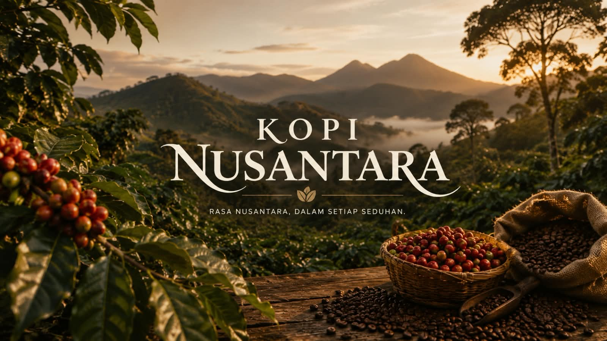
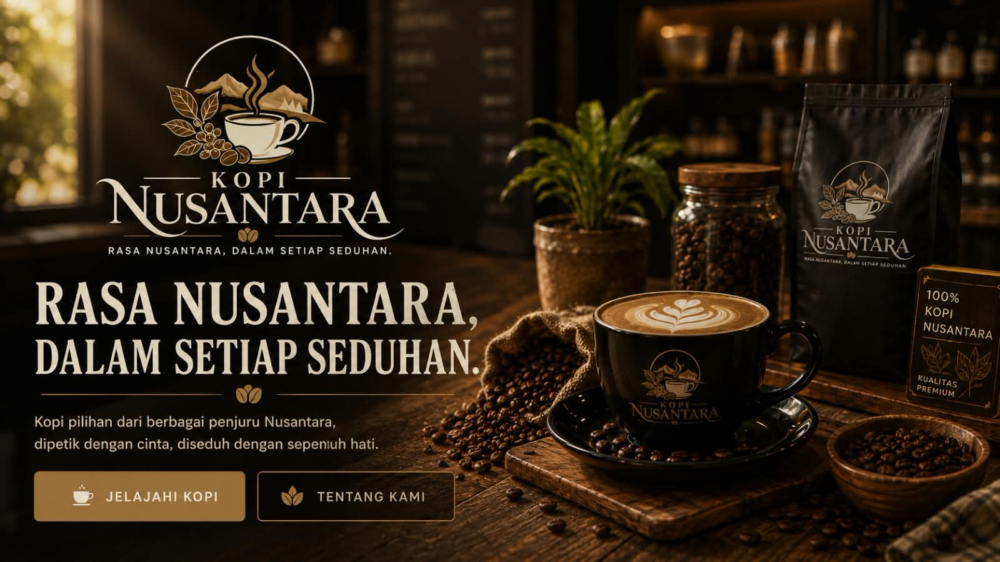
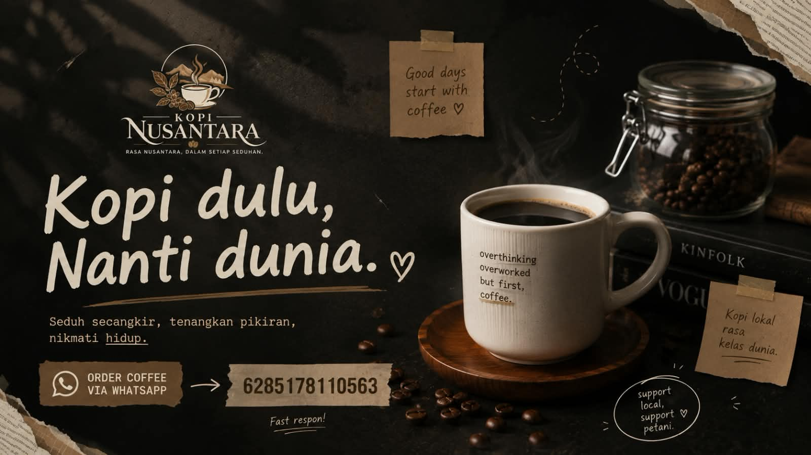
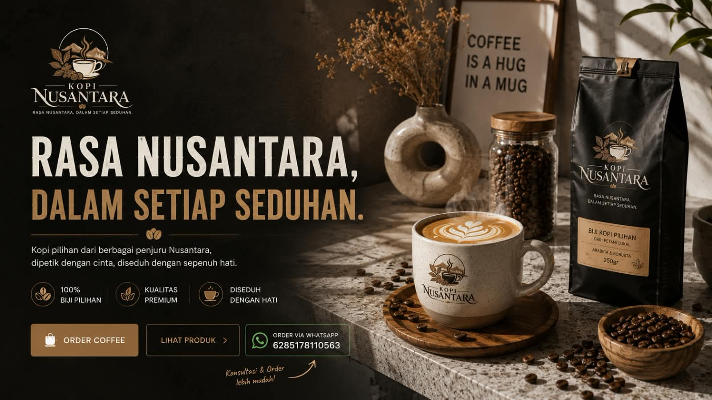
Kopi Pilihan Nusantara
Biji kopi pilihan dari berbagai daerah Indonesia — dipilih dengan cermat, disangrai dengan perhatian, dan dikirim untuk menemani setiap momen.
www.kopinusantara.id
Cerita Kami
Dari dataran tinggi Gayo hingga lereng Kintamani, Indonesia menyimpan ribuan kilometer tanah penghasil kopi dengan karakter rasa yang tak pernah sama dua kali. Kopi Nusantara lahir dari keinginan sederhana: membawa keragaman itu utuh ke dalam cangkir Anda, tanpa menyamarkan asalnya.
Setiap biji melewati tangan petani yang mengenal tanahnya, disangrai secukupnya agar karakter aslinya tetap terjaga, lalu dikirim dalam kondisi terbaik — sedekat mungkin dengan momen ia dipetik.
Profil Kami
Kopi Nusantara lahir dari gagasan sederhana bahwa kopi terbaik Indonesia sering kali tertinggal di kebunnya sendiri, jarang sampai utuh ke tangan penikmatnya. Kami hadir sebagai jembatan — menghubungkan petani di dataran tinggi Nusantara dengan siapa pun yang ingin merasakan rasa asli daerahnya, secangkir demi secangkir.
Didirikan oleh tim yang menghabiskan waktu bertahun-tahun menjelajah kebun kopi dari Aceh hingga Bali, Kopi Nusantara menggabungkan kurasi yang cermat dengan proses penyangraian kecil-kecil, agar setiap batch tetap terasa personal — bukan produksi massal tanpa wajah.
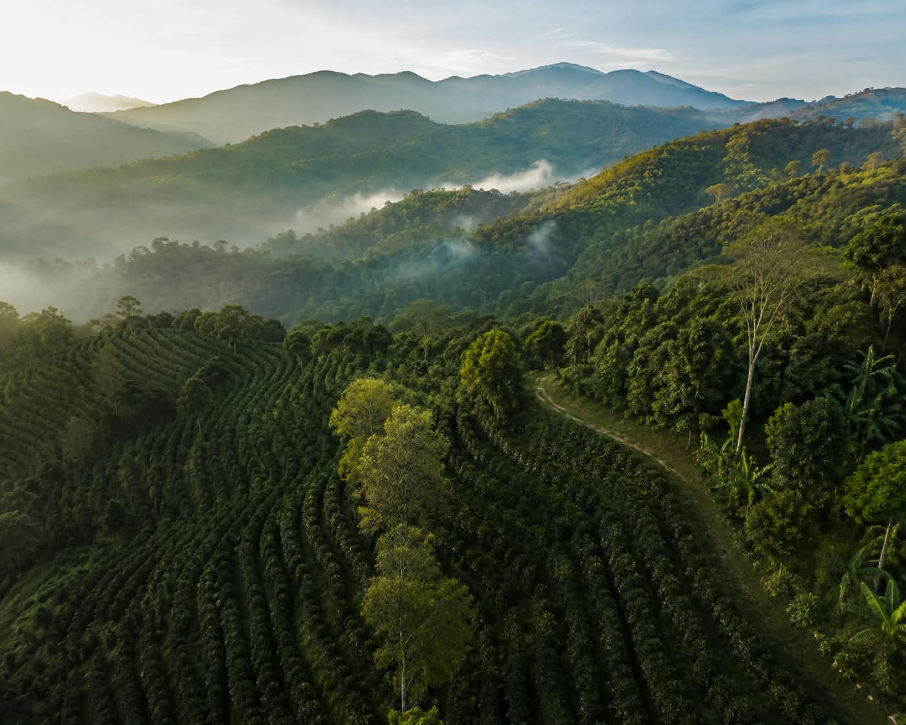
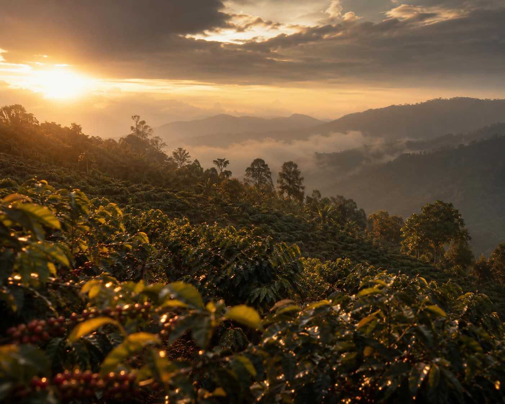
Peta Rasa
Setiap daerah menyimpan iklim, ketinggian, dan tangan pengolah yang berbeda — dan karena itu, karakter rasa yang tak tertukar.
Tumbuh di ketinggian dengan aroma rempah lembut dan keasaman yang tenang, khas tanah vulkanik Aceh.
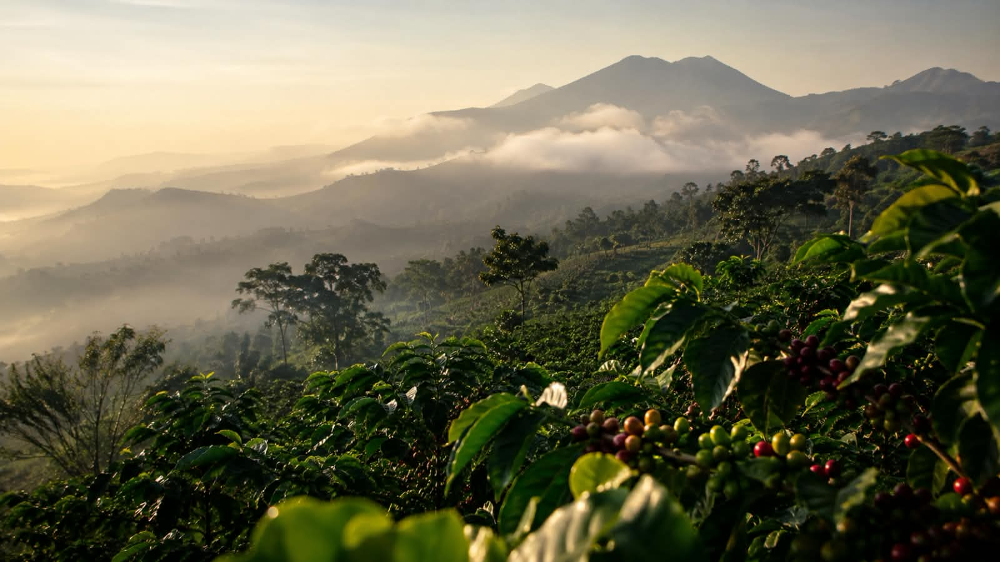
Body yang tebal dengan sentuhan earthy dan rempah hangat, hasil pengolahan turun-temurun di pegunungan.
Ditanam berdampingan dengan jeruk, memberi keasaman citrus yang cerah dan seduhan yang ringan.
Visi
Menjadi jembatan yang mempertemukan kopi terbaik dari setiap daerah di Indonesia dengan penikmatnya, sambil menjaga keadilan bagi petani yang menanamnya.
Misi
Produk Unggulan
Pilih dari biji kopi terbaik yang kami kurasi dari setiap daerah penghasil.
Katalog produk di bawah ini masih berupa data contoh untuk kebutuhan tampilan. Filter, detail produk, dan keranjang sudah berfungsi di sisi tampilan, namun proses checkout dan pembayaran akan tersedia pada tahap pengembangan berikutnya.
Komitmen Kami
Setiap biji disortir manual untuk memastikan hanya kualitas terbaik yang sampai ke tangan Anda.
Kami menelusuri setiap batch hingga ke kebun asalnya, menjaga jejak dan cerita di baliknya.
Dari 100 gram untuk mencoba hingga 1 kilogram untuk kebutuhan harian — sesuai ritme Anda.
Dikemas rapat agar aroma dan kesegaran tetap terjaga sampai di depan pintu Anda.
Menggunakan kemasan yang dapat didaur ulang untuk menjaga kesegaran tanpa membebani bumi.
Kami terbuka membantu reseller dan mitra usaha kecil yang ingin menjual Kopi Nusantara di daerahnya.
Kunjungi Kami
Bukan hanya di layar — datang dan rasakan langsung Kopi Nusantara di kios kami.
Lokasi
Temukan pusat Kopi Nusantara dan kunjungi kami secara langsung.
Kunjungi Kami
Bantargebang, Bekasi, Jawa Barat
Koordinat: -6.309000, 106.994600
WhatsApp: +62 851-7811-0563
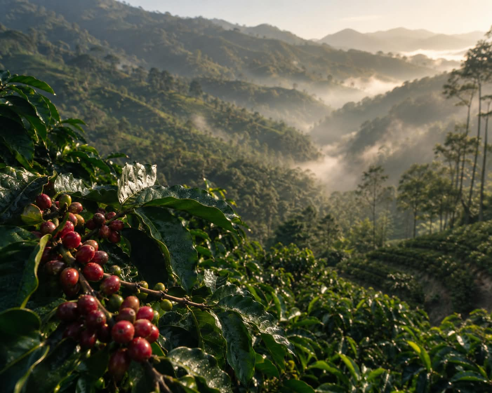
“Kopi bukan sekadar minuman —
ia adalah cara sederhana untuk merasakan sebuah tempat.”
Jurnal
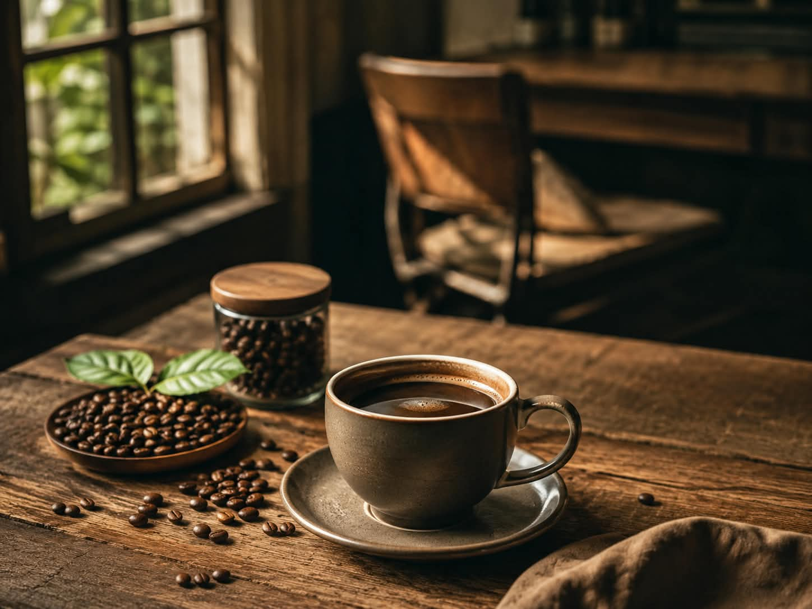
Menelusuri dataran tinggi Aceh, tempat lahirnya salah satu Arabika paling dihormati di dunia.
Baca Selengkapnya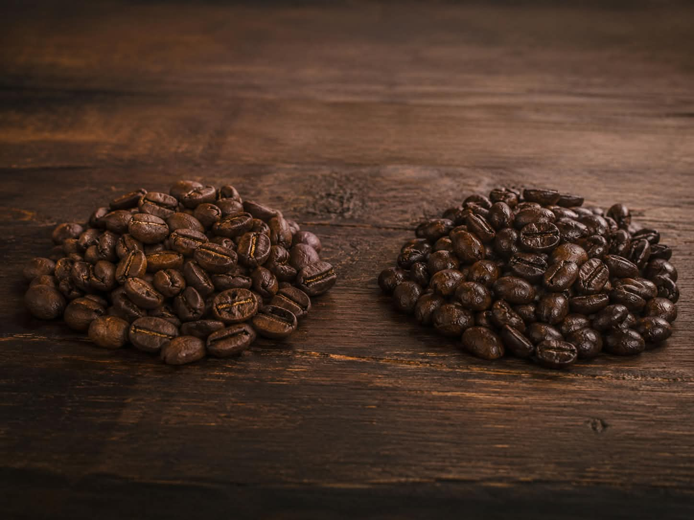
Dua jenis kopi, dua karakter berbeda — memahami mana yang cocok dengan cara Anda menyeduh.
Baca Selengkapnya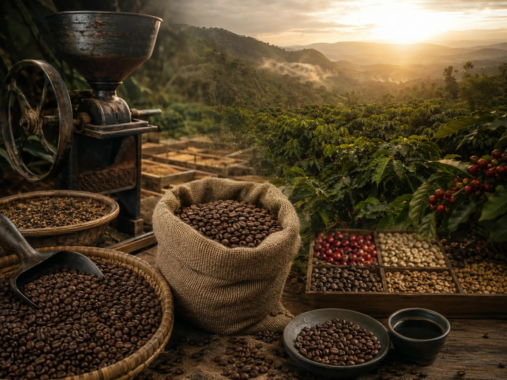
Dari kebun kecil di pelosok daerah hingga secangkir kopi di meja Anda — sebuah perjalanan panjang.
Baca SelengkapnyaCerita Pelanggan